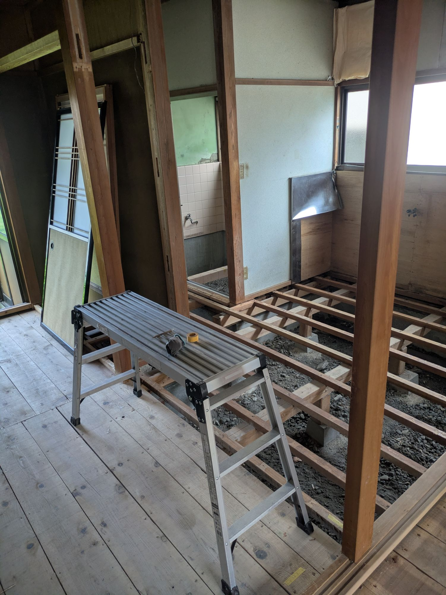

アキヤドおまかせプラン
- 初期費用
改修・家具などの初期費用は、アキヤドがほぼ全額を 負担します。 - 受け取り方
毎月、決まった額の家賃 例：毎月 3万円（一定）
こんな方に
- 手間も
お金も かけずに 空き家を 活かしたい - 毎月の
収入を 安定させたい

アキヤド借り上げプランに
How it works


How much?
アキヤドおまかせプラン
毎月3万円
決まった額の家賃
アキヤド売上シェアプラン
最低保証2.5万円＋売上の
（例）
家賃が
Simulation
モデル物件
Risk
約14万円／年
土地の
しくみ
約63万円
何もしなくても、
しくみ
10万円以下
名義変更を
しくみ
Message


約14か月
初期投資を回収
約98%
約53%
計画の
★4.88
Airbnb の評価
51件・掲載時点
和モダンな
室内が とても オシャレで、 快適でした！ お部屋の 居心地が よく、 下田旅行の 素敵な 思い出に なりました。
Plans
こんな方に
こんな方に
Compare
| 比べる | そのまま | 住まいと | 自分で | おまかせ | 売上シェア |
|---|---|---|---|---|---|
| 初期費用 | なし | 改修が | 改修・ | ほぼ | 補修を |
| 手間 | 見回り・ | 管理会社に | 集客・ | ほぼ | ほぼ |
| 収入 | なし | 借り手 | 売上− | 毎月 | 保証＋ |
Flow
費用無料
費用無料
費用運営の
FAQ